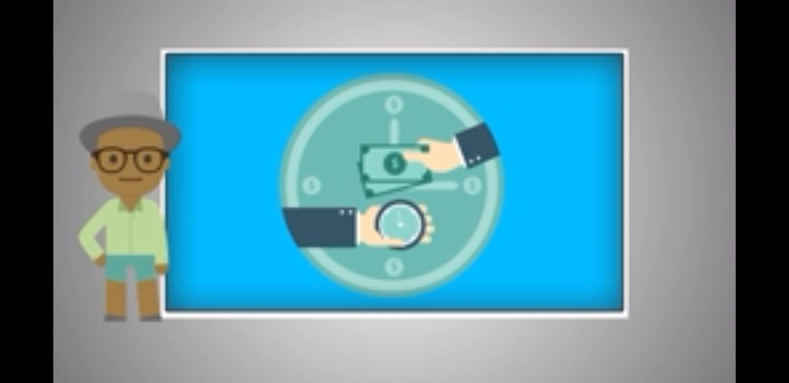

ormar personas con conosimientos tecnologicos en las areas industrial, comercial y de servisio, a traves de la preparacion de bachilleres y profesionales tecnicos, con el fin de contribuir al desarrollo sustentable del pais.
ser una institucion de educasion mnedia superior, sertificada, orientada al aprendisaje y desarrollo de conosimientos tecnologicos y humanisticos.
La carrera de Técnico en contabilidad ofrece las competencias profesionales que permiten al estudiante
registrar operaciones contables de empresas comerciales y de servicios operando los procesos contables
a través de un sistema electrónico, así como registrar operaciones contables de una entidad fabril,
determinar contribuciones y asistir en actividades de auditoría.

Asimismo podrá desarrollar competencias genéricas relacionadas principalmente con la participación en los procesos de comunicación en distintos contextos, la integración efectiva a los equipos de trabajo y la intervención consciente, desde su comunidad en particular, en el país y el mundo en general, todo con apego al cuidado del medio ambiente.
La formación profesional se inicia en el segundo semestre y se concluye en el sexto semestre, desarrollando en este lapso de tiempo las competencias para registrar operaciones contables de empresas comerciales y de servicios, operar los procesos contables dentro de un sistema electrónico, registrar operaciones contables de una entidad fabril, determinar las contribuciones fiscales de personas físicas y morales y asistir en actividades de auditoría de una entidad.
visita el video para saber mas de la contabilidad
en el siguiente boton puedes descargar el programa de estudios para verificar las materias que debes cursar
.jpeg)
calle central poniente s/n barrio san francisco c.p 30900 (telefono y fax 9626410262)
e-mail institucional: cbtis24.dir@uemstis.sems.gob.mx